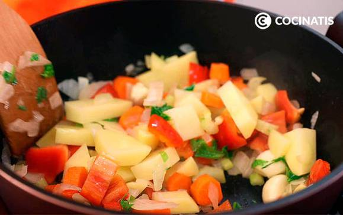
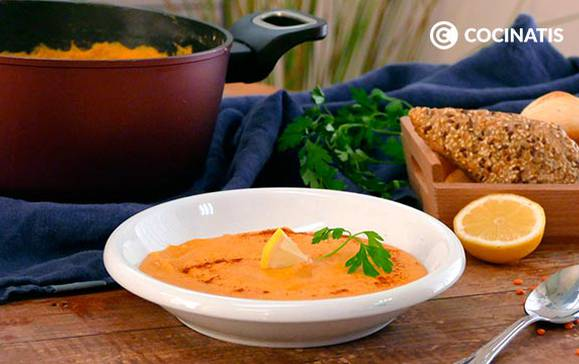

Mi Menú Saludable - Crema de lentejas rojas con verduras
Ingredientes
General
- 250 gramos de lenteja roja
- 1 litro de caldo de verduras
- 1/2 pimiento rojo
- 1 cebolla
- 2 ramas de apio
- 2 zanahorias
- 1 patata
- 2 limones
- 2 hojas de laurel
- 8 dientes de ajo
- cayena (al gusto)
- comino (al gusto)
Pasos a seguir
Elaboracion Paso a paso
- Picamos la cebolla y el apio (no retires las hojas). Corta las zanahorias en rodajas. Trocea el pimiento y la patata. Pela los ajos.
- Rehogamos la cebolla en una cazuela. Añadimos el apio, la zanahoria, el pimiento, la mitad de los ajos y las patatas. Rehoga 2 minutos.

- Añadimos las lentejas, cubrimos con el caldo de verduras y agregamos un limón partido por la mitad y el laurel. Calentamos a fuego alto hasta punto de ebullición. Y bajamos a fuego bajo y que cueza 30 minutos.
- Retiramos el laurel y exprimimos el limón. Añadimos los dientes de ajo restantes y el zumo del limón restante. Y calentamos 10 minutos a fuego suave.
- Trituramos hasta obtener una textura suave.
- Añadimos sal, comino y cayena al gusto. Y la mezclamos.
- Servimos la crema de lentejas rojas y verduras y la decoramos con un poco de pimentón dulce o picante por encima.
